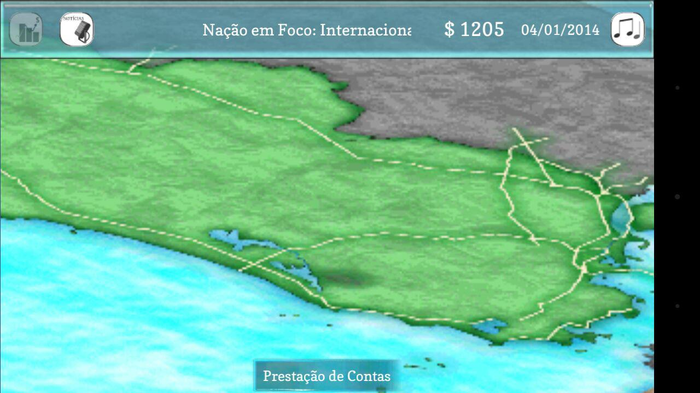
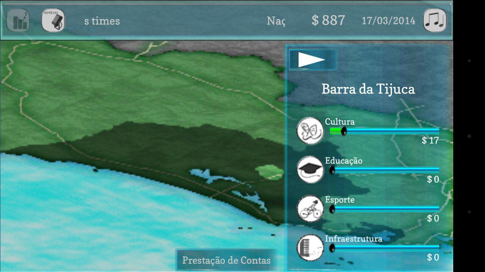
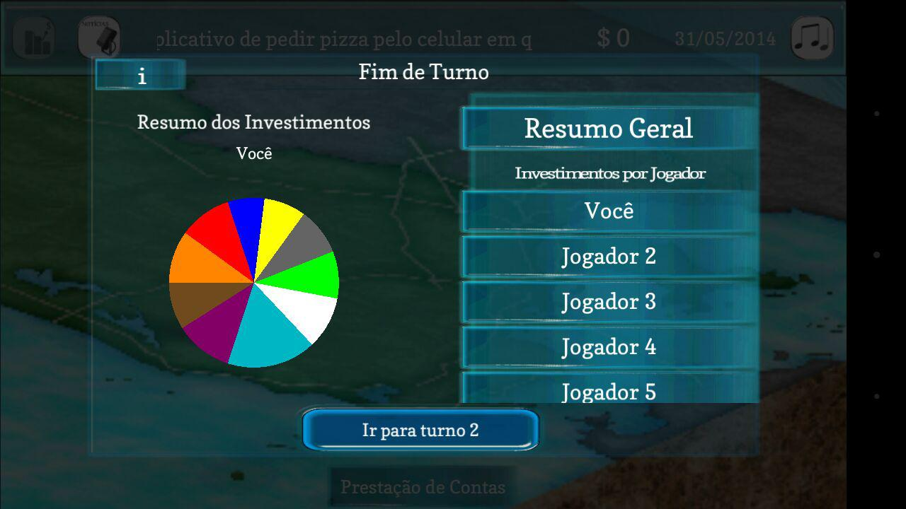
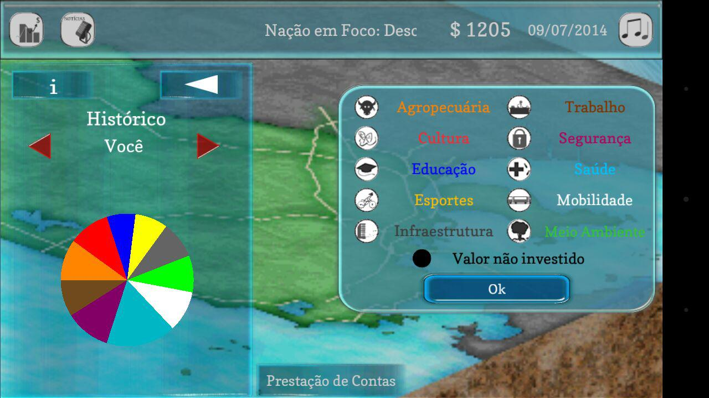
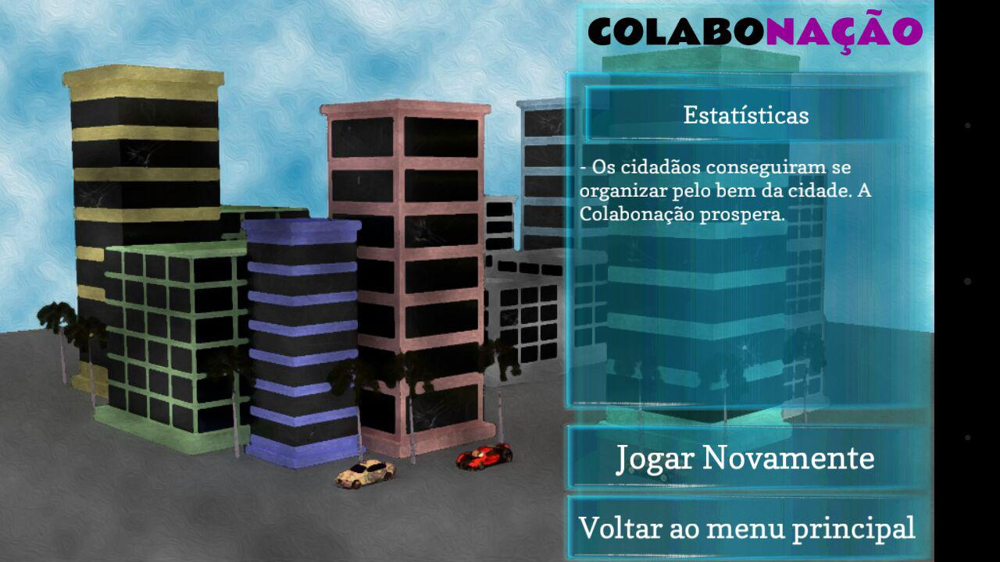

apresentado por Luciano SB
Nossos gestores se perguntam isso há décadas.
Viva a experiência de uma Democracia Direta no Brasil. Aqui você não é um prefeito, é um cidadão com igual poder de decisão!
Todo o jogo foi desenvolvido com base em dados reais das cidades sobre os bairros, população e orçamento.
Ao jogar Colabonação você ajudará a compor relatórios de opinião pública sobre como o dinheiro público deveria ser usado.
Com apoio do edital Inovapps do Ministério das Comunicações
Você é um cidadão administrando a cidade com sua parcela de contribuição tarifária
Invista nos bairros como julgar mais adequado. Lembre-se de economizar.
No final do turno, analise os investimentos dos outros jogadores
Você também pode consultar os investimentos pelo histórico
Ao final do jogo, você saberá como suas escolhas afetaram a cidade
